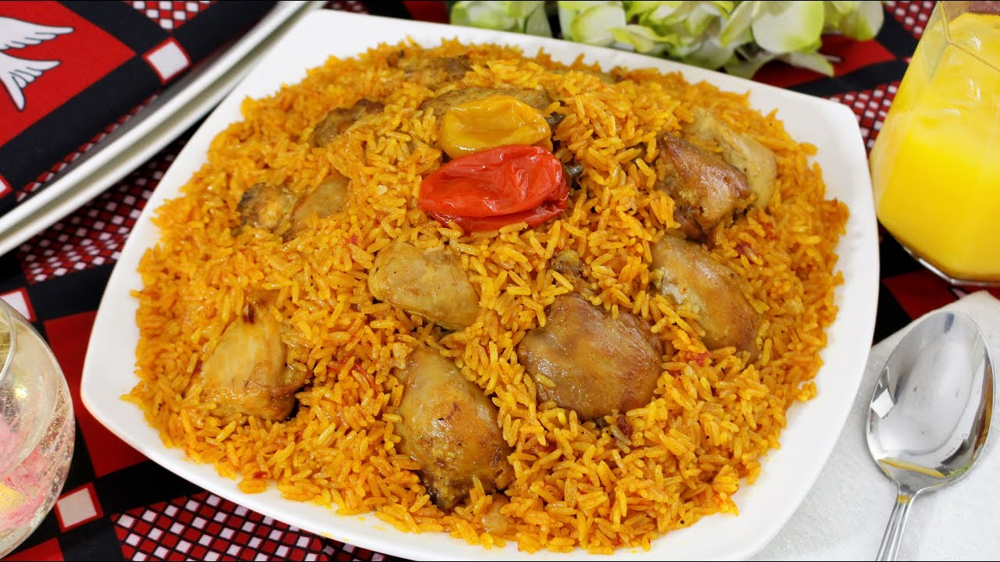

Fat Rice

Description
A well-known dish of West Africa
Ingredients
- Full chicken cut into pieces
- Blended fresh ginger and garlic
- Three large blended fresh tomatoes
- One tube/can of tomatoe puree
- Carrot
- Chicken seasoning
- Curry powder
- 1 diced onion
- 2 scotch bonnet peppers
- Oil for frying
- 1 vegetable stock pot to be disolved in water
- 3 dried bay leaves
- Salt
Steps
- Take a large saucepan and heat in on a medium to high
heat, then add in some oil, three dried bay leaves.
- Add in the garlic and then your chicken pieces fry for two minutes
- Add in the chicken seasoning, the ginger, followed
by adding some salt to taste. Cook for two minutes while stirring
- After two minutes we can add in the diced onions,
the blended fresh tomatoes and the tomato puree.
Again stir well and let cook until the water from the
tomatoes reduces
- Next and in the curry powder and stir and cook until
all the Ingredients soak in to the meat and it begins to
look like a stew
- Add in the rice and give it a good mix
- After adding the rice we can now add in the disolved vegetable
stock pot, pour enough to come just above the level of the rice
- Now we can add in our last Ingredientsk. Add two scotch
bonnet peppers then partially cover and let it cook until the
rice is cooked to your desired taste
- Once the water is almost gone your rice will be
nearly ready. What I like to do at this point is to cover
it with foil for the last 5-10 minutes. This makes the rice
soft and moist
- After 5-10 minutes the water should now be gone
so remove the foil and your rice should now be ready